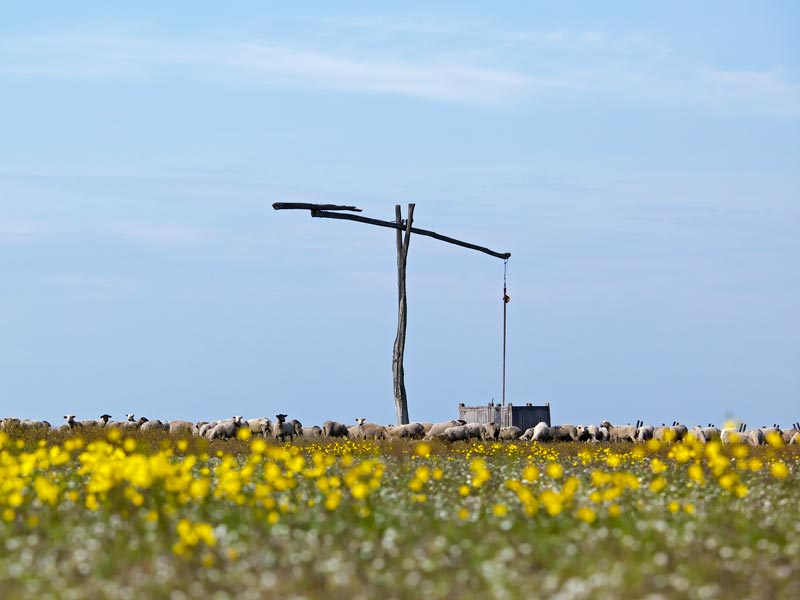
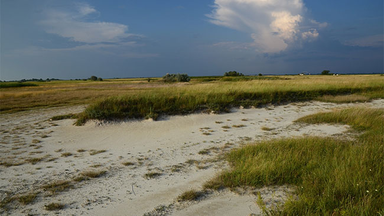
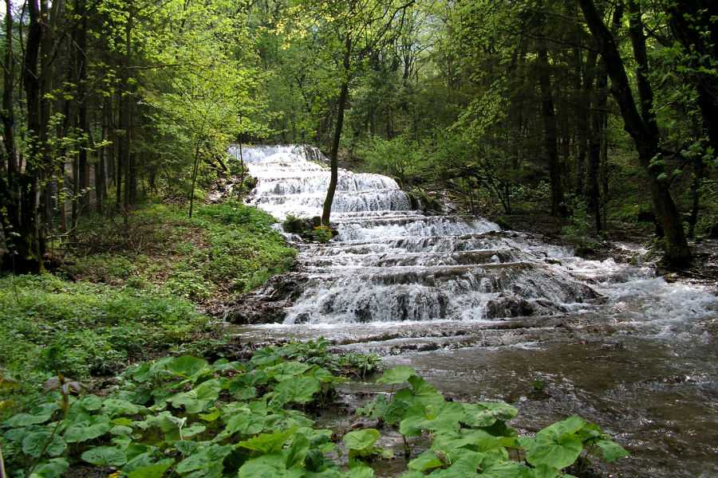
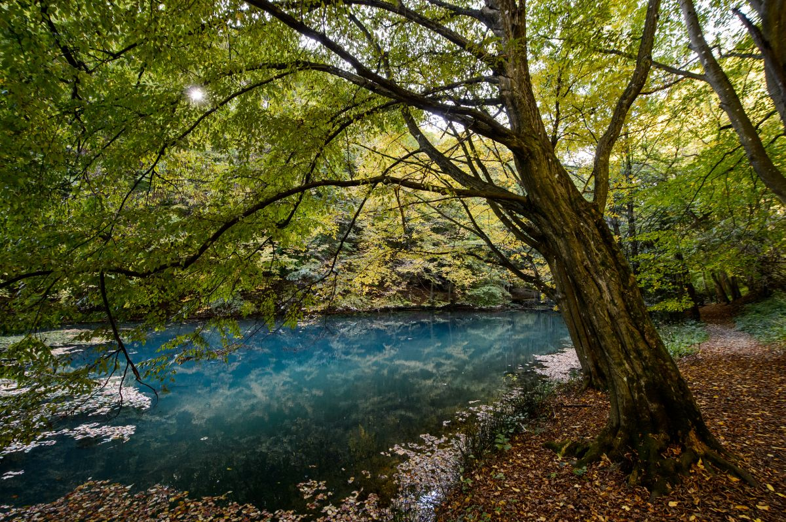
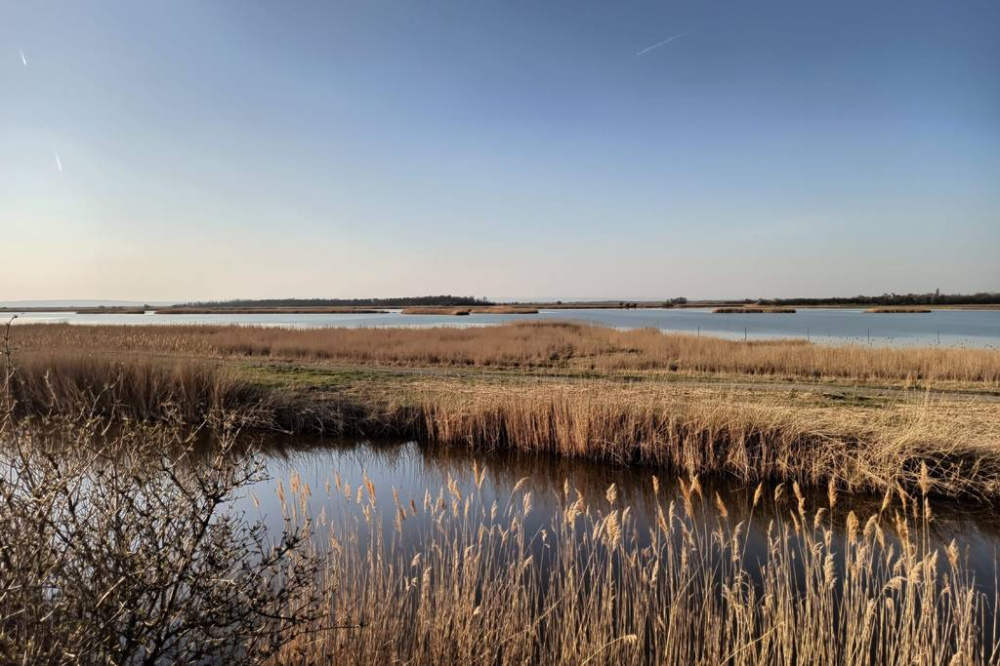
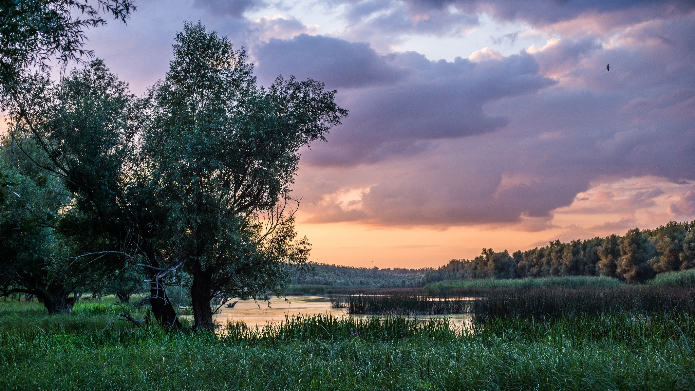
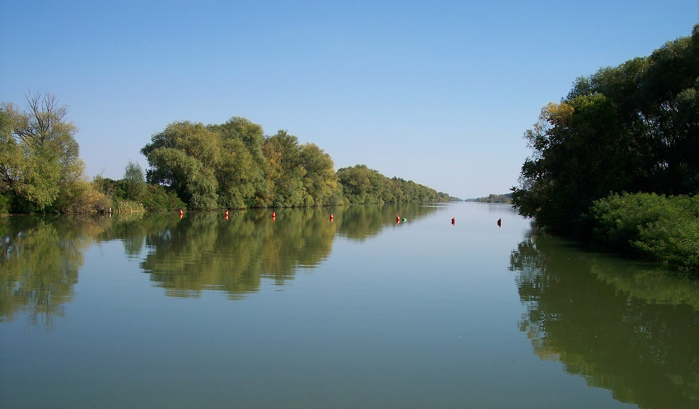
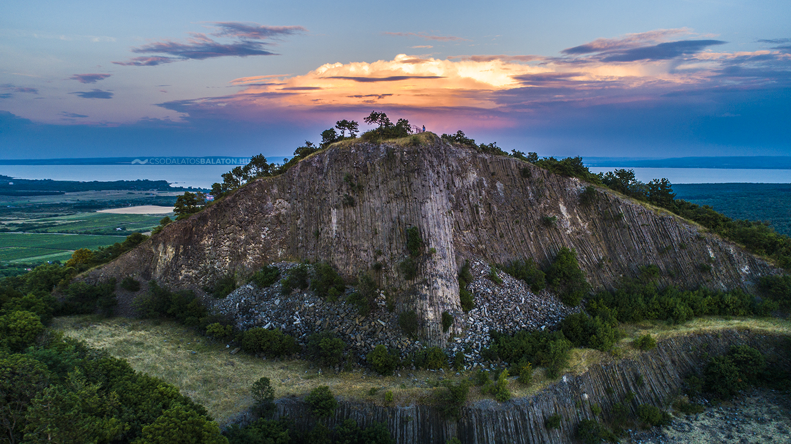
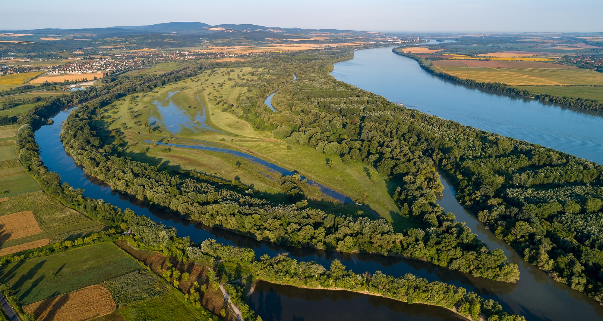
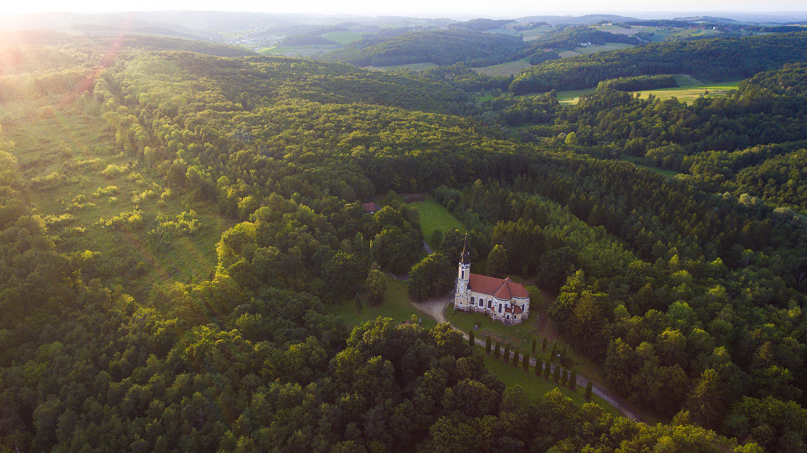

Képgaléria

Hortobágyi Nemzeti Park

Kiskunsági Nemzeti Park

Bükki Nemzeti Park

Aggteleki Nemzeti Park

Fertő-Hanság Nemzeti Park

Duna-Dráva Nemzeti Park

Körös-Maros Nemzeti Park

Balaton-felvidéki Nemzeti Park

Duna-Ipoly Nemzeti Park

Őrségi Nemzeti Park